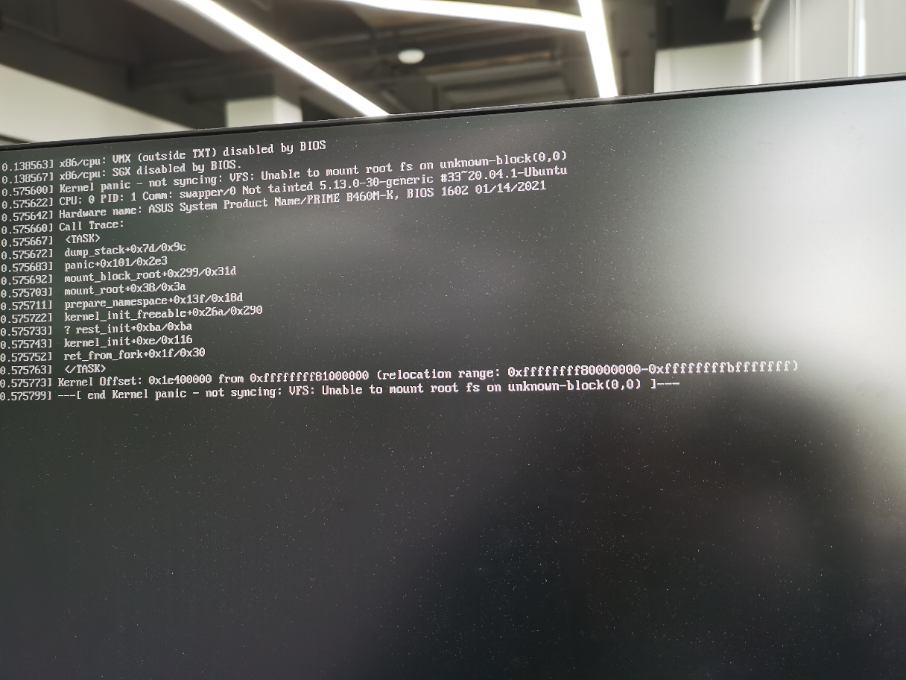

某天早上来到公司打开电脑，结果发现并没有进入那个我熟悉的界面，而是出现了大段的错误信息，那个时候我是非常郁闷且崩溃的😭，今天的心情似乎都不怎么好了。
虽然是第一次碰到这种问题，但是我面不改色，毫不慌张，因为我以前被 Ubuntu 折腾过好几次了😂，可以说是‘免疫’了😃。
当然，如果问题解决不了，最坏的结果也就是重装系统而以。
开干。
Error Message

1 | Kernel Panic - Not Syncing: VFS: Unable to Mount Root FS on Unknown-Block(0,0) |
Solution
第一步: 选择旧的内核进入系统
重启你的电脑，然后在引导界面，选择 Advanced options for Ubuntu 菜单，你将看到一些可选的内核项，在这里我的是
5.13.0-30-generic(也就是出问题的内核版本)，所以我们需要选择一个以前的内核版本，经过尝试发现 5.11.0-27-generic 也可以成功进入的。
第二步: 找到根分区的文件系统
通过使用老版本的内核成功进入系统后，打开终端，输入: sudo fdisk -l，可以看到磁盘分区的信息:
1 | 设备 起点 末尾 扇区 大小 类型 |
其实我们的目的是要找到 根分区(/) 的文件系统，从上面的信息中并不能直观地得到答案，输入 df -l，输出如下:
1 | 文件系统 1K-块 已用 可用 已用% 挂载点 |
于是我们知道根分区的文件系统是 /dev/sda2。
第三步: 找到出问题的内核版本
如果你不知道在你电脑没有出问题的时候的内核版本是多少，在终端输入: dpkg --list | grep linux-image, 输出如下:
1 | ic linux-image-5.11.0-25-generic 5.11.0-25.27~20.04.1 amd64 Signed kernel image generic |
那个最新的就是我们需要的。在这里，我的是 5.13.0-30-generic。
最后
通过上面的几个步骤，我们知道了:
- 根分区(/)的文件系统是 /dev/sda2
- 我们原先的内核版本是 5.13.0-30-generic (出问题的内核版本)
在终端输入以下命令:
1 | sudo mount /dev/sda2 /mnt |
然后更新 initramfs
1 | update-initramfs -u -k 5.13.0-30-generic |
ℹ️ 5.13.0-30-generic 是出问题的内核版本，用你的内核版本替换它。
最后，更新 grub
1 | update-grub |
更新成功后，重启你的电脑，你应该可以正常的进入你的系统了。
大功告成！
Reference
[SOLVED] How to Fix Kernel Panic - Not Syncing: VFS: Unable to Mount Root FS on Unknown-Block(0,0)
- Post title：[已解决] 如何修复 Kernel Panic - Not Syncing: VFS: Unable to Mount Root FS on Unknown-Block(0,0)
- Post author：w2xi
- Create time：2022-03-09 19:45:11
- Post link：https://w2xi.github.io/2022/03/09/已解决-如何修复-Kernel-Panic-Not-Syncing-VFS-Unable-to-Mount-Root-FS-on/
- Copyright Notice：All articles in this blog are licensed under BY-NC-SA unless stating additionally.